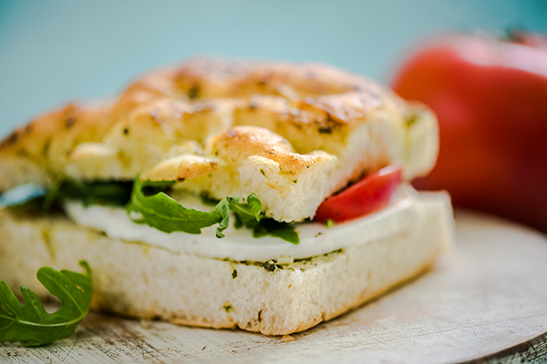

Chicken Pesto Sandwich

This chicken pesto sandwich starts with juicy air-fried chicken, shredded and tossed in a bright homemade basil pesto, then piled onto oven-toasted focaccia with melted fresh mozzarella and a handful of peppery arugula. A drizzle of balsamic glaze and a few sun-dried tomatoes add a sweet, tangy finish — or skip them and let the pesto shine on its own.
Prep time: 20 minutes | Cook time: 15 minutes | Total time: 35 minutes | Yield: 2 large sandwiches (halve each for 4 smaller portions)
Ingredients
Pesto
- 2 cups fresh basil leaves
- ⅓ cup pine nuts
- 1 garlic clove
- ½ teaspoon salt
- ½ cup extra-virgin olive oil
- ½ cup finely grated Parmesan cheese
Air-Fried Chicken
- 1 pound boneless, skinless chicken breasts
- 2 teaspoons olive oil or avocado oils
- 1 ½ teaspoons paprika
- 1 teaspoon garlic powder
- ½ teaspoon onion powder
- ¾ teaspoon salt
- Pinch of black pepper
Sandwich
- 2 focaccia rolls or 1 large focaccia loaf, cut into sandwich portions
- 2 tablespoons extra-virgin olive oil, for toasting
- ⅓ cup prepared pesto
- 2 tablespoons mayonnaise
- 4 oz fresh mozzarella, sliced
- ¼ cup sliced sun-dried tomatoes, optional
- 2 tablespoons balsamic glaze
- ½ cup arugula
Cooking Instructions
- Preheat the air fryer to 375°F for 5 minutes.
- Pound the chicken to an even ½–¾ inch thickness, rub with oil, and season both sides with the paprika, garlic powder, onion powder, salt, and pepper.
- Air fry the chicken at 375°F for 10–12 minutes, flipping halfway, until it reaches 165°F internally.
- While the chicken cooks, add the pine nuts, garlic, and salt to a food processor and pulse into a rough paste.
- Add the basil and pulse until finely chopped, then add the Parmesan and pulse again to combine.
- With the food processor running, slowly drizzle in the olive oil until smooth and spreadable. Scrape down the sides and pulse once more.
- Let the chicken rest 5 minutes, then shred it with two forks and toss thoroughly with the pesto.
- Slice the focaccia in half horizontally with a serrated knife and brush the cut sides with olive oil.
- Place the halves cut-side up on a baking sheet and toast at 400°F for 3–5 minutes, until golden at the edges.
- Spread mayonnaise on the inside of the top half of the focaccia.
- Pile the pesto chicken onto the bottom half and top with mozzarella.
- Broil for 1–2 minutes, watching closely, until the mozzarella is melted and bubbly.
- Top with arugula, sun-dried tomatoes (if using), and a drizzle of balsamic glaze.
- Close the sandwich with the mayo-spread top half, slice, and serve warm.